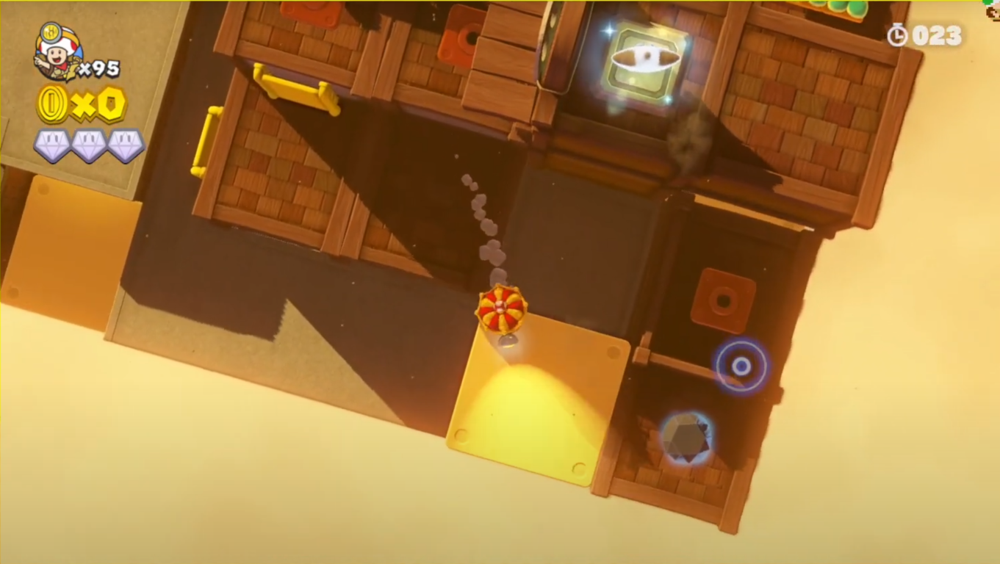
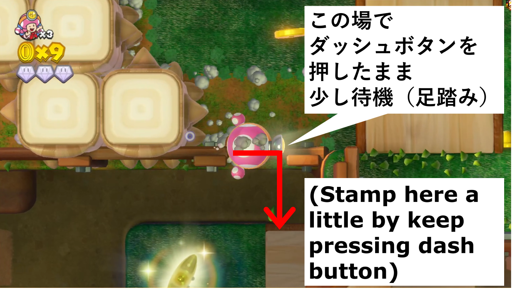
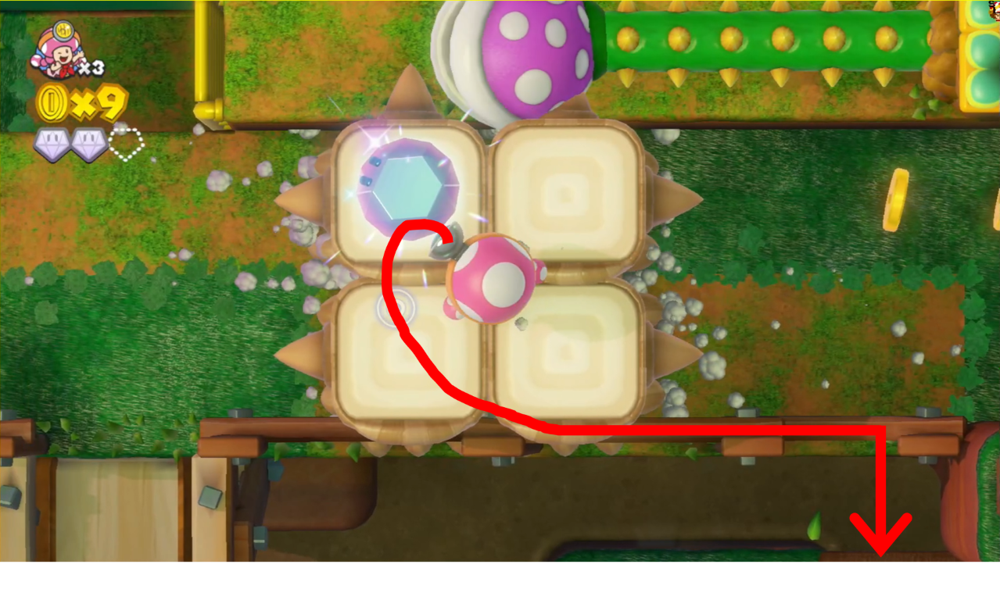
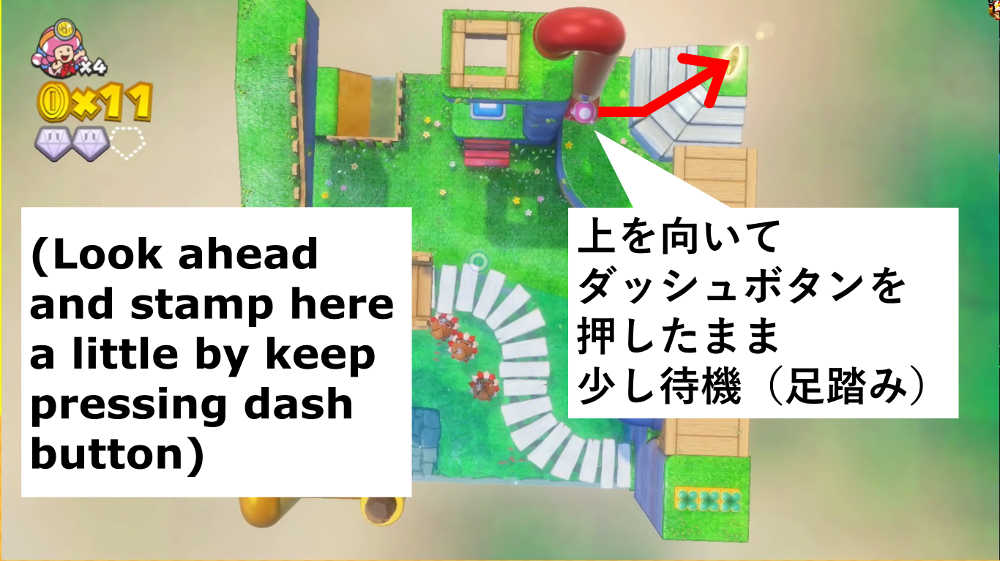
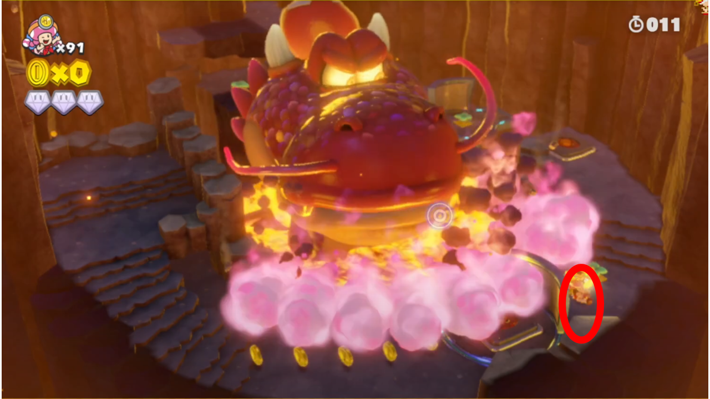
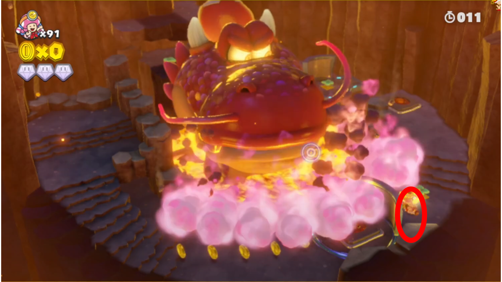
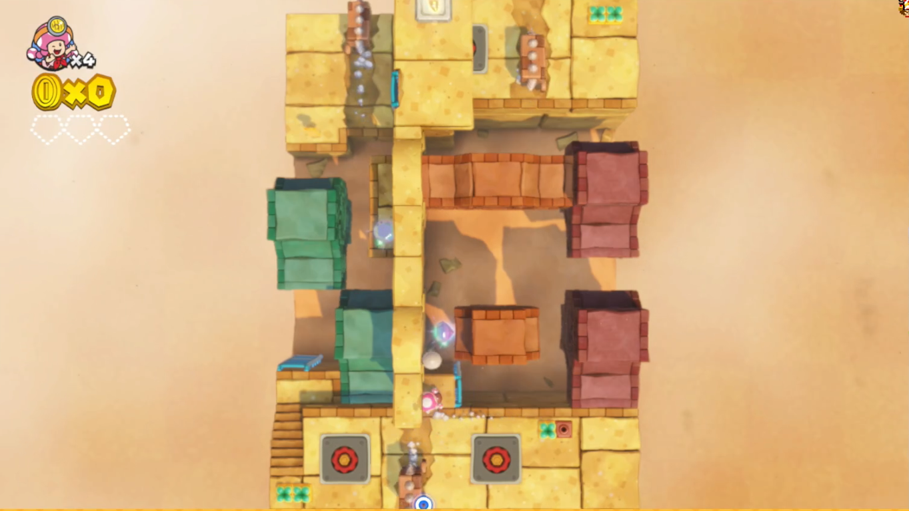

https://samuelladoco.github.io/CTTT_SR_Guide_Any-Switch-Solo_Ja/
本ガイド内に登場するゲーム画面のスクリーンショット（注記などが上書きされていないベース画像のこと）の著作権は、ゲーム自体の著作権者が保有しています。本ガイドでは、スクリーンショットを引用目的で利用しています。
本ガイドで紹介しているテクニックのほとんどは、著者以外の複数のRTA走者さんがアップロードしたさまざまな先行RTA動画に由来します。それらの動画をアップロードしたRTA走者さんたちに感謝します。
SLDC_CTTT-Any-Switch-Solo_1h19m58s_20220227.mp4 ）を提供中SRCにあるガイド-Any_訪問面と各面ダイヤ取得数_SLDC編集.xlsx を参照～.lss ファイル ）を分けることを推奨
ダッシュ状態で正反対の方向に折り返そうとすると、ブレーキがかかりながら多少滑った後、振り返り
はしごの長さにもよるが、 はしごを降りるよりもはしごの付近から落ちるほうが速い
次のコースに入るための本のページ送りの速さも多少は重要
高低差が大きいところを落下する際は、 ダッシュを解除すると尻もちをついてしまうことを回避できる場合があり、また、尻もちをつかない高低差であっても心なしか落下後の動き出しが少し速くなる 印象
ヒキヌケ草やモグラを引き抜くなどしてダイヤが現れた場合は、 引き抜いた位置から動かなくてもダイヤを取得可能
シビシビ状態は、ZRボタンを離してからも多少継続
特に記載のないコースでは、ダイヤを3つすべて取得します 。ダイヤを2つ以下または全く取得しないコースの解説には、注意書き加えています。
ダッシュで最短距離を走りましょう。
パワースター取得後のアニメーションは飛ばせません。ここに限らず、このゲームのいくつかのコースで発生するアニメーションは、コースのクリア実績がなければ飛ばすことができません。
GSN(2:56-) ／ SLDC(1:42-) を参照ください。
2つ目のダイヤを取得 → 次に引くプルスイッチ までの間のルートは 3秒程度ショートカットできるプレイ ができるが、難しいため、GSNもSLDCも挑戦していない
コース開始直後に、画像左の矢印の方向にダッシュすることで、（水中ではなく）陸地の端に落下できます（水中に落下した場合は、やりなおす）。落下し始めたら、（必要ならカメラを回転と）右上の丸い回転岩を一時的にシビシビさせ、最速周期で向こう岸に渡れるようにしてください。
その後の動きは GSN(3:44-) ／ SLDC(2:31-) を参照ください。
引っかからずに丸い回転岩の穴に入るには、コインの真ん中を通るとよいです（画像右）。
このコース全体にわたって、上記「操作キャラの基礎動作」で述べた、シビシビ状態の継続について注意してください。
クリア後におだい達成のアニメーションが流れますが、おだいを達成しないよう行動するよりも時間のロスが少ないので、おだいを達成してかまいません。
全体の流れは SLDC(3:30-) を参照ください。以下、手順を記載します。
全体の流れは こちらのサンプル動画 を参照ください。以下、左上のブロックを動かすタイミングを記載します。
全体の流れは SLDC(5:06-) を参照ください（ただし、Pスイッチを踏んで折り返すところや、3つ目のダイヤを取得後にロスが発生しています）。
ダブルチェリーはかすめるように取り旋回すると、分裂した隊長と距離ができ、直後の2人同時Pスイッチ踏みがしやすくなります。
迷路の移動方法は画像のとおりです。


この後、左隊長が最上段から落下するタイミングと右隊長が2段目から落下するタイミングがあうように動かすとよいです。
3つ目のダイヤを取る際は、画像の状況からカメラ回転をせずに、右隊長をモグラがいる赤丸のあたりに向かって ひきぬくボタンを連打しながらダッシュさせます 。ひきぬいた後は、左隊長を奥まで進ませることを優先した後、右隊長にダイヤを回収させ赤色の地面まで戻ってこさせることを優先しながら左隊長をPスイッチまで進ませます。

このコースには入りません。
まず、裏側の土管に入り逆さ側の地面で1つ目のダイヤを取得し、やりなおします。
やりなおし後は、以下の流れでクリアします。
注意点として、くるくるハンドルの近くでダッシュボタンを押す、もしくは、押していると、自キャラがくるくるハンドルをつかみ、ダッシュをボタンを離すまで動けなくなります。なので、 ダッシュはくるくるハンドルから少し離れたところでしてください 。ほかのくるくるハンドルが設置されたコースでも、同様に気をつけてください。
強制スクロールコースのため、解説を省略します。
スタート地点から真右に進むと画像の赤線の柵に引っかかるので、やや右上→真右と移動する必要があります。
この先のコースでミスをする可能性がある場合は、ここでコインを100枚集めて1UPするのがよいです。ただし、おだいを達成しないよう、パタテンテンを最低1匹は残さなくてはなりません。左右に同時に現れるパタテンテンの片方を残すのがお勧めです。
このコースには入りません。
全体の流れは SLDC(9:07-) を参照ください。
最初は、画像左のようにダッシュしてください。そうすることで、ドラゴドンのブレスのうち画像右の赤丸の部分が壁に当たり、キノピオ隊長が壁から先に進んでいても被弾しません。

1つ目のダイヤを取得したら、そこの壁の裏に隠れて被弾を避けてください。
最初の階段を登っている途中で 動く壁が見えたら、シビシビさせて ください。シビシビは画像の位置あたりでZRボタンを離せば、壁の裏のはしごに間に合います。
慣れないうちは各所の壁の裏にとどまり被弾を避けたり、1度の被弾は覚悟で進んでもかまいません。ただし、1度被弾した場合は、後半で上から落ちてくる溶岩玉に気をつけてください。
まっすぐ上に向かってダッシュしてください。
GSN(12:58-) を参照ください。
SLDC(12:40-) を参照ください（ただし、誤って最初にコインを引き抜いており、ロスが発生しています）。もしギミックの発動順序を間違えてダイヤが取りにくくなったら、やりなおすのがよいでしょう。
SLDC(13:38-) を参照ください（ただし、誤ってモーキンにカブを当てており、ロスが発生しています）。
最初に落下する際は、画像のようにのびのびパックンに触れずに落ちるのが理想ですが、少し左に落ちるとトゲに被弾するので、そのリスクを考えると少し右に落ちてのびのびパックンを踏んでもよいです。
全体の流れは Elvaさんによるコース記録 を参照ください。
画像の場所のプルスイッチを引いて即座にその下の穴に入るには、 上下に動く黄色い床の端からダッシュでプルスイッチに近づきなるべく手前側でひきぬき、ダッシュを解除して折り返すとうまくいきやすい です。
コース記録と同等のタイムをだすには、画像（Elvaさんの上記動画から引用）の状態から奥側に動く黄色い床に逆らってダイヤを取ることが重要です。
なお、前述のプルスイッチを引き抜いて即座にその下に入れたが画像の動く黄色い床で1周期待った場合と、プルスイッチの下に入れなかったがそれ以降は最速で移動した場合とで、タイムはほぼ同じになります。
GSN(17:09-) を参照ください。落下ミスしそうになったらやりなおすを行ってください。
おだいを達成しないために、最初の青いパタテンテンを踏んでいます。ここで踏むのに失敗した場合は、次の青いブロックの上のカブを引き抜き、その場のパタテンテンに当てるのがよいでしょう。
全体の流れは GSN(18:07-) を参照ください（ただし、最初のブロックを誤って多く移動させており、また、不要な被弾をしています）。
クリボータワーの上にある3つ目のダイヤの取り方ですが、クリボータワーの位置や誘導にかかる時間を勘案して、以下のどちらかのうち適切なほうを実施してください。
GSNが成功している3つ目のダイヤだけを取りクリボータワーを踏まないテクニックは、難しめです。もしダイヤが取れないと大きなロスとなるので、安定をとってクリボータワーを確実に踏むようにしてもよいと思います。
GSN(19:12-) を参照ください。
コースに入った直後に調整するカメラの位置によって、テンテンやヘイホーに出会う位置が変わるので、注意してください。
全体の流れは GSN(20:53-) ／ SLDC(19:40-) を参照ください。
最初、 画像左の赤線のあたりに落ち、そこから奥に進まないかぎりは、ウィンゴはワープしません 。また、ウィンゴは羽の位置が最も高くなったところでワープを開始するため、 画像右のようにウィンゴが羽を降ろし始めたタイミングで奥に進む ことで、ウィンゴのワープを最大限遅らせることができます。この2つの仕様を活用して、ウィンゴの最初のワープ先で確実にカブを当てましょう。
なお、 Elvaさんのプレイ のように、床の端を通らなくてもウィンゴにカブを当てるのに間に合うことができます。こちらのほうがより短い距離を進むので、確実にカブを当てることができるならばこの動きを採用するとよいです。
2つ目のダイヤは、ウィンゴによる風がやんだ瞬間に取りましょう。ココまでの一連のショートカットに失敗した場合は、通常ルートに切り替えてください。
ウィンゴ戦では、ウィンゴのワープの動きやワープ先でのアクションはランダムのように見えますが、 もしかしたらキノピオ隊長の動きによって制御できるかもしれません。何かわかった方は情報提供いただけるとありがたい です。
ウィンゴが落とす大きなカブの位置は、キノピオ隊長が立ち止まっていればその頭上に、動いていれば進行方向先になります。
1-Prologueと同様のため、解説を省略します。
全体の流れは SLDC(25:10-) を参照ください。
1つ目のダイヤは画像の赤丸のあたりにありますが、くるくるハンドルの高さから直接木の足場に落ちるとキノピコが尻もちをつきロスとなるので、画像のように2段階で落ちてください。ただし、画像のところに落ちても尻もちが発生する場合があるので、くるくるハンドルの高さで少し歩いてから落ちるなどの工夫が必要になります。もしダイヤを取り逃がしたら、やりなおすを行ってください。
全体の流れは SLDC(26:22-) を参照ください。
最後のショートカットは、画像左のように動くとうまくいきやすい です。 また、別の方法として、3つ目のダイヤを取得して画像右のように素早く動くことができれば、SLDC(26:22-)の動画から4秒程度タイムを短縮することができます。もし鍵をなくしてしまっら、そのときのキノピコの位置によってはやりなおすを行うほうがよい場合もあります。
 強制スクロールコースのため、解説を省略します。
この先のコースでミスをする可能性がある場合は、ここでコインを100枚集めて1UPするのがよいです。ただし、140枚集めるとおだいを達成してしまうため、取り過ぎないようにしてください。最後のパタテンテンの軍団を無視するのがお勧めです。
全体の流れは GSN(30:09-) ／ SLDC(28:59-) を参照ください。
このコースで難しいのは、キノピコを動かしつつ、透明道路を避けて3つ目のダイヤが隠れているブロックをシビシビで破壊することです。 キノピコを落下させてしまわないのが最も重要です 。そのうえで、 透明道路とブロックがかぶらないようなカメラアングルと、ブロックを破壊するよいタイミングを見つけてください 。もし想定外の落下をしたら、やりなおすを行ってください。
このコースでは ダイヤを2つ取得します 。
全体の流れは SLDC(29:50-) を参照ください（ただし、2か所で引っかかっておりロスが発生しています）。このコースでは、2か所でショートカットを決める必要があります。
1つ目は、画像左の赤線で示した柵の上から黄色土管側の水場に落ちることです。 コース開始直後に、画像左の位置にキノピコを動かしてうきわクリボーを赤線の柵から離す方向に誘導し、必要ならシビシビもしてください 。そうしないと、柵から黄色土管側の水場に落ちられなくなります。もしこのショートカットに失敗したら、やりなおすを行ってください。
2つ目は、赤土管の上からパワースターのある台地への空中ダッシュです。 画像右のように動くとうまくいきやすいです 。
このコースには入りません。
GSN(31:50-) を参照ください（ただし、被弾しておりロスが発生しています）。もしくは、わずかにタイムが遅くなりますが こちらのサンプル動画 のルートでもよいです。
GSN(32:45-) ／ SLDC(31:38-) を参照ください。
くるくるハンドルは、反時計回りに90度回します。
GSN(33:50-) と SLDC(32:46-) とで、ルートが異なります。GSNのほうが2秒程度速いのですが、その理由は画像左（GSNから引用）のところで上から降ってくる溶岩玉を待つことなく通り抜けができているためです。この状況の再現のさせ方がわからないため、SLDCでは別ルートを採用しています。 GSNの状況の再現のさせ方がわかった方は情報提供いただけるとありがたい です。
以下のように動く と、2つ目のダイヤを取ってからすぐに上下移動する黄色床に乗れる可能性が高くなります。
 

おだいを達成しないために、（GSNの場合はやりなおし後に）最低1度は被弾する必要があります。
もし溶岩に落下しこのままではミスになるようなら、やりなおすを行ってください。
何も操作する必要はありません。なお、ここでいくらコインを取得しても残機は増えません。
GSN(36:49-) を参照ください（ただし、被弾しておりロスが発生しています）。
くるくるハンドルは、2か所とも反時計回りに90度回します。
1つ目のダイヤにカブを当てるのが失敗しやすいので注意です。 Lボタン1回 & Rスティックを真下へ でカメラ位置を画像のようにすると、真上に向かってカブを投げればよくなり、わかりやすいです。
1つ目のダイヤ取得 → 奥側のくるくるハンドル回し → 手前側のくるくるハンドル回し、という順番でもかまいません。
もし落下した場合、すでにくるくるハンドルを回しているのであれば、やりなおすを行わずはしごを登るほうが早いと思います。
全体の流れは こちらの動画 を参照ください。このコースは、最速周期に間に合わせる動き3か所と、最後のガボンの撃破が鍵です。
1つ目の最速周期間に合わせは、1つ目のダイヤを取ったあと、なるべく早く画像左の位置にスタンバイし、反対側に渡れるようになったら最短距離で渡ってください。そして、画像右のように、 2つ目のダイヤをかすめるように取得し旋回して戻ってください 。
2つ目の最速周期間に合わせは、画像左の位置で待機し、 降りてきた壁に沿ってダッシュして3つ目のダイヤがある穴の中に入り込んで ください。
3つ目の最速周期間に合わせは、3つ目のダイヤ取得後、画像右のように 壁に沿ってダッシュして ください。
最後のガボンは、 まず、わざと被弾し、無敵時間中にLスティックをぐるぐる回転（方向はどちらでも可）させて スピンアタックを発動させて倒します。スピンアタックが発動するには、速さよりもスティックが大きく回されているかが効いてきます。ゲーム画面ではなくLスティックを見ながら行うとよいです。
全体の流れは SLDC(37:46-) を参照ください（ただし、1度登ったはしごを降りてロスが発生しています）。
このコースでは最初に、画像左の茶色の網ブロックの上に落下するショートカットを決める必要があります。 赤丸の柵にはうようにして落下すると成功しやすい です。カメラ移動をせずにキノピコを茶色の網ブロックの上に落下させることができれば、タイムがより縮まります。もし失敗した場合は、やりなおすを行ってください。
ダイヤを3つ取得したあとパワースターのところに向かうにあたり、画像右の赤丸で囲んだ2匹のヌックンが邪魔になるので、シビシビさせてください。

最初のショートカットの成功率が低い場合は、通常ルートでクリアしてください。
クリア後におだい達成のアニメーションが流れますが、おだいを達成しないよう行動するよりも時間のロスが少ないので、おだいを達成してかまいません。
SLDC(38:40-) を参照ください。
まっすぐ上に向かってダッシュしてください。
このコースでは ダイヤを2つ取得します 。
SLDC(40:29-) を参照ください（ただし、よけいな被弾をしてロスが発生しています）。1つ目のダイヤを取得する付近では、モクドンの上を最速周期で通過さえできれば最終的なクリアタイムは同じになるので、過度に急ぐ必要はありません。
このコースには入りません。
こちらの動画 を参照ください。動画中で触れられているキラーの誘導は、カメラ視点を真上にすると成功しやすいです。
Elvaさんのプレイ のように、最初のダイヤを取得する前にその次のキラーを動かす、というテクニックも実施してもよいです。
もし落下ミスをしそうになったら、やりなおすを行ってください。
このコースでは ダイヤを2つ取得します 。
全体の流れは GSN(43:25-) ／ SLDC(42:24-) を参照ください。
くるくるハンドルの操作順と回転方向・量、以下のとおりです。
おだいを達成しないよう、どこかで1度被弾してください。
もし落下ミスをしそうになったら、やりなおすを行ってください。
このコースでは、 キノピオのamiiboを使うことで、無敵になり、多くの敵に体当たりをして先に進むことで、10～15秒程度のタイム短縮ができます 。以下、キノピオのamiiboをつかう場合／使わない場合にわけて解説します。
なお、amiiboの使用自体に8秒程度かかることや、敵を倒すことでダイヤを取得したり道が開けたりするコースは簡単である1-04以外にないことから、このコース以外ではamiibo使用によるタイム短縮効果はないと思います。
全体の流れは こちらの動画 を参照ください（ただし、カメック戦でのはしご登りでもたついたのと、2つ目のダイヤを取るのに（はしごのサイドを落ちるのではなく）はしごを降りたことで、ロスが発生しています）。
まず、2-17のクリア後、右ボタン2回で本を2ページめくり → Aボタンでコースをアンロック → +ボタンでamiibo連携モードに → amiiboをコントローラーにタッチ、をします（すると、自動でコースに入ります）。
最初の透明土管からファイアブロスゾーンへと発射されたら、着地する前に、左側の桃色壁を右に動かします。Pスイッチを踏み透明土管に入ったら、Lスティックを右に倒し1つ目のダイヤを取得し、上に倒し土管の上からでます。
次の透明土管からカメックゾーンへと発射されたら、右のカメックをシビシビ → カブを引き抜いて左から2つ目の土管に投げ → 左のカメックをシビシビ → はしごを登り → 左上の透明土管にカブが見えたあたりで右のカメックを再びシビシビ → （左のカメックがカブでやられ） → 右のカメックに体当たり、をします（画像）。
ハンマーブロスゾーンでは、まず最初のタワークリボーをシビシビさせ、体当たりし、タワークリボーとその上のハンマーブロスを倒します（上のハンマーブロスも倒すので、シビシビの解除を忘れないでください）。次に、（タワー）クリボーとカブ砲台最寄りのハンマーブロスを体当たりで倒して、カブ大砲に入ります。この時点で付近にハンマーブロスは2匹になりますが、1匹はもう1匹のハンマーでやられてしまいます。
カブ大砲に入ったら、3つ目のダイヤ取得 → 付近の残る1匹のハンマーブロスを撃破 → キノピオ隊長がいる側のハンマーブロス2匹を撃破（ 画像のあたりにカブを発射すると早く撃破可能 ） → カブ大砲から脱出してパワースター取得、という流れでクリアします。
全体の流れは こちらの動画 を参照ください。以下、各ゾーンについてのコメントです。
画像の透明道路（画像はシビシビにより見える化したもの）を通ってください。
SLDC(47:43-) を参照ください（ただし、よけいな被弾をしてロスが発生しています）。
もし落下ミスをしそうになったら、やりなおすを行ってください。
全体の流れは SLDC(48:30-) を参照ください。
画像の下側の鉄球の落下によるシーソー発動に間に合いそうにない場合は、鉄球を一瞬シビシビさせて シーソー発動を遅らせてください。
画像の上側の鉄球を一瞬シビシビさせ、キノピオ隊長が水色の板に到着したタイミングでシーソーが発動するようにすると、よりタイムが速くなる はずです。
SLDC(49:24-) を参照ください。
周期により透明になっているブロックへは、「ピッピッピッ！」のSEの3つ目の「ピッ」のタイミングで落ちることで、安全にブロックの上に着地できます。なお、もう少しだけ早いタイミングで落ちても大丈夫です。
画像のところのショートカットは必ずしも行う必要はなく、手前にあるヒキヌケ草がない赤い床で待機してもかまいません。ただし、はしごを登った先の赤い床にたどり着けるまでの時間的余裕は少なくなります。

カブを持った状態でファイアブロスに体当たりし、被弾と引き換えに倒しているのは、おだいを達成しないためです。
もし落下ミスをしそうになったら、やりなおすを行ってください。
こちらの動画 を参照ください。
画像のように手前のヌックンからのボールに被弾せずにツルハシを取得するのは、少し難しいです。最短経路をダッシュする、2つ目のダイヤをかすめるように取得する、前述の「RTA全般にわたる事項」の「操作キャラの基礎動作」にあるように落下後の動き出しを速くする、などの工夫をする必要があります。もし被弾してしまった場合は、奥側のヌックンからのボールにも当たってミスにならないよう、 1回目の被弾後の無敵時間中にツルハシを取得するか、奥側のヌックンからのボールに当たらないよう待って ください。
全体の流れは こちらのサンプル動画 を参照ください。
画像の箇所での落下からのはしご登りは、ダッシュ状態を維持したまま行うほうが速いです。
最後の木の端を渡るショートカットは、手前で落下してしまうリスクがあるので、安定をとるならばやらなくよいです。
前半で被弾してしまった場合のリカバリー方法は GSN(52:50-) を参照ください。
攻めルートは こちらのサンプル動画 、安定ルートは GSN(53:55-) になります。
もし予定外のところで落下した場合は、やりなおすを行ってください。
全体の流れは SLDC(53:45-) を参照ください。
ショートカットは、ダッシュ状態のまま画像の矢印のように進むと成功しやすいです。
もし落下ミスをしそうになったら、やりなおすを行ってください。

SLDC(54:45-) を参照ください。最初と最後のヌックンを確実に引き抜けるようにするためには、少しの時間でよいのでシビシビさせるのがよいです。
強制スクロールコースのため、解説を省略します。
残機が少ない場合は、ここでコインを100枚集めて1UPするのもよいですが、ダイヤ取得やルート確保に支障がでる可能性があるので、自信がなければコインを集めないことをお勧めします。関連して、1UPキノコを取るとおだいを達成してしまうため、取らないでください。
1台目のトロッコの降り際に出現するドロへいにはカブを投げ、通路を確保すると安全です。
1台目のトロッコを降りてからは、画像左の最初のドロへいで被弾し、無敵時間中にまっすぐ突っ切ってください。
1つ目のダイヤは、画像右の側には壊せないブロックがないため、取得しやすいです。

まっすぐ上に進むと画像の赤丸のあたりで引っかかるので、出だしは若干左上方向にダッシュしてください。
このコースには入りません。
★
SLDCではこのコースに入らず、代わりに3-26に入っています。GSNではこのコースに入っています。 GSN(1:00:48-) を参照ください。
右側のカブ大砲に入ってからのダイヤ2つ取得とブロック破壊に時間がかからなければ、このコースを選択するメリットがあります 。時間がかかる場合や、タイムがぶれやすい場合は、3-26を選択することをお勧めします。
GSNやSLDCではこのコースに入らず、代わりに3-20に入っています。
このコースに入る場合は、 ダイヤを2つ取得します 。
全体の流れは こちらの動画 を参照ください。おだいを達成しないために、少なくとも1匹のヘイホーに見つかり追いかけられてください。
このコースには入りません。
何も操作する必要はありません。なお、ここでいくらコインを取得しても残機は増えません。
このコースには入りません。
GSNやSLDCではこのコースに入っています。このコースに入らない場合は、3-14に入ります。
このコースでは ダイヤを2つ取得します 。
始まったら、スターに向かって一直線にダッシュしてください。仕掛けが発動したら、以降は強制スクロールになるため、解説を省略します。
開始直後に床を動かすことで、最初の周期
GSNではこのコースに入らず、代わりに3-12に入っています。SLDCではこのコースに入っています。
このコースではダイヤを取得しません。
このコースではダイヤを取得しません。
最初、斜めでも間に合う場合がある（Cadarev）
ウィンゴが落とす大きなカブの位置は、1-18の場合と同様です。
Speedrun.comでは機種により順位表が分かれています。
Switch版（2018年7月13日発売）：
3DS版（2018年7月13日発売）：
このほかの違いについては、speedrun.comに英語で情報があります（ その1 、 その2 ）。
特別編を購入しているか否かで、1-Prologue終了～1-01開始までの間に発生するチュートリアルの内容に違いが発生。具体的には、 特別編を購入することでチュートリアルの内容が4秒短縮
特別編（英語名："Special Episode"）のコースをクリアーするカテゴリーも存在
メッセージはボックス単位で一括表示され、現れるボックス数も各言語で同じと見受けられるため、表示言語による違いによるRTAの有利・不利はないと思います。
以上